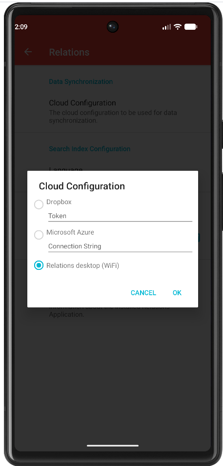
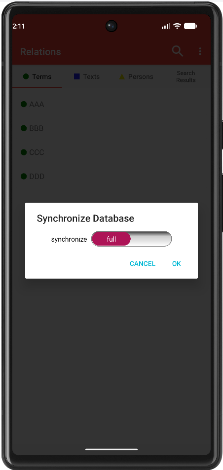
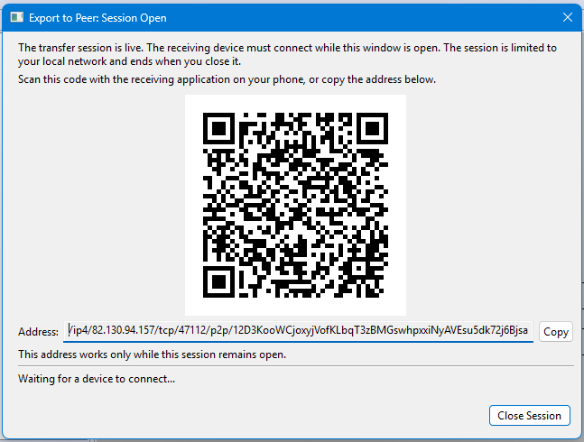
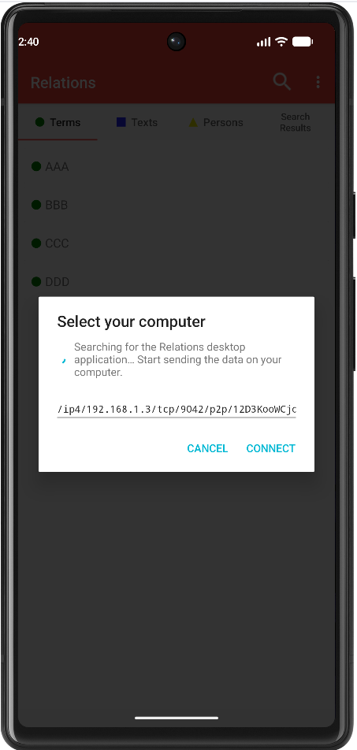
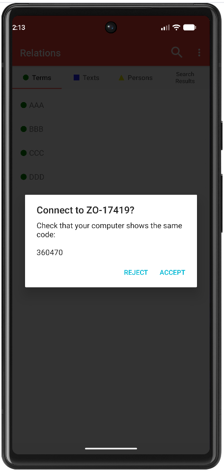
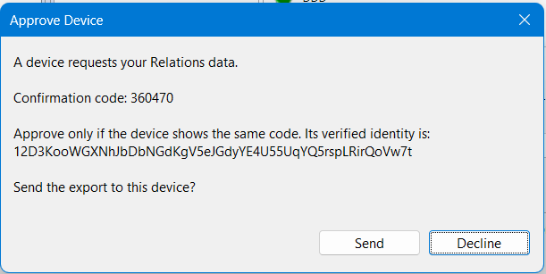
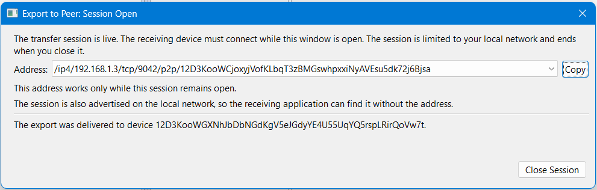

The Relations application is also available as mobile app on Android.
To read the Relations data on your mobile phone, you must first upload the data created on your computer by the Relations application.
To do this, you can use the peer-to-peer upload feature if your computer and smartphone are on the same Wi-Fi network.
For the initial transfer of the data, use the full synchronization option. After the initial upload, you can use the incremental data synchronization. This option only transfers the changes made since the last synchronization.
To enable data uploads via a peer-to-peer network, you must first activate this feature on your smartphone: Menu -> Settings -> Cloud Configuration: check Relations desktop (WiFi).

To start the upload of the data (from the desktop application), choose Utility -> Upload to Peer ...
On your smartphone, go to Menu -> Synchronize Database.
Make sure that the scope of the data delivery (full / incremental) is the same on both devices.

After you opened the session on you desktop application, you'll see a QR code displayed.

This QR code can now be scanned using the Relations Mobile app. Alternatively, the /ip4 address can be copied and pasted onto a smartphone.

Then click Connect on your smartphone.
If the two devices can pair on the network, a confirmation code will be displayed.
If the confirmation codes match, click Accept on the smartphone.

Click Send on the desktop application.

The data is then uploaded and processed on the smartphone.
In the desktop application, a success message is displayed after the upload is complete.
